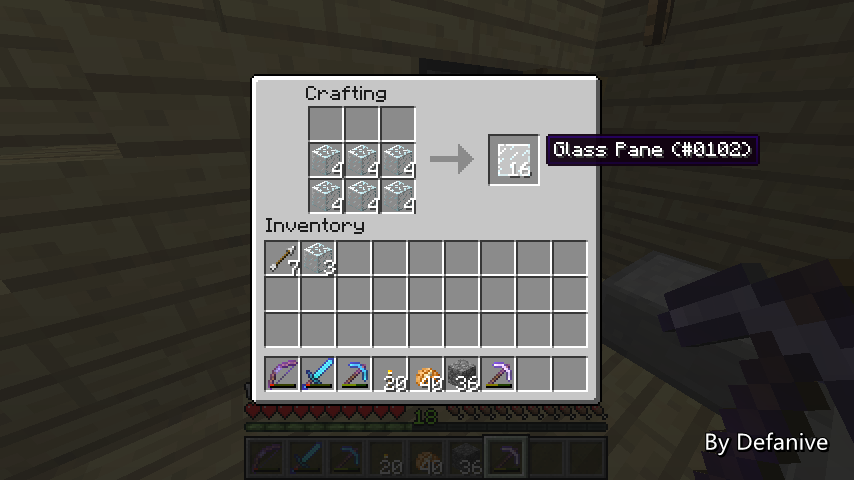
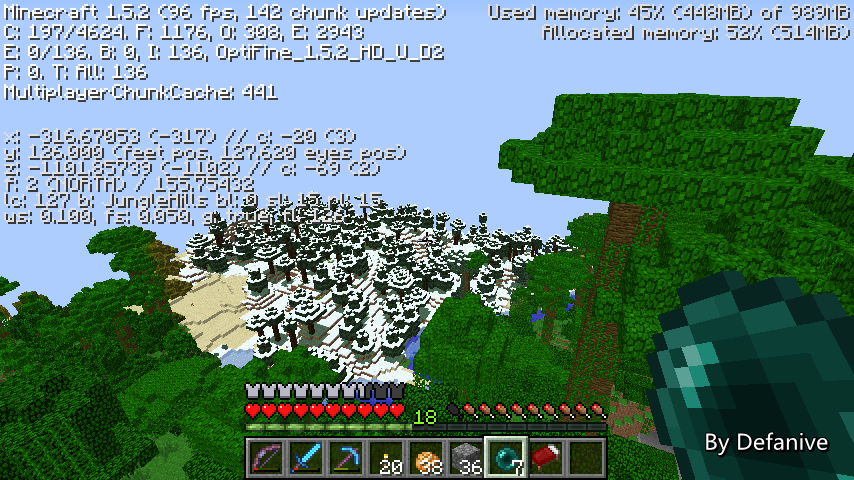

首页
上一页
226
227
228
229
230
231
231
232
233
234
235
236
下一页
末页
defanive2
无尽黑夜
14
这几个星期一直在喵服里玩UHC，直播停了一段时间
不过，又到了周末了，玩MC是必须的！
前几天百度改了登录页面，于是MCLive的登录出现了问题
刚刚修好了，现在来试用一下
如果没什么问题的话一会直播完就可以发新的MCLive了
对这几天用不了MCLive的同学表示抱歉
——来自 MCLive
16299楼
2013-05-11 10:43
defanive2
无尽黑夜
14
好久没玩生存了
自从开了连接材质之后
顶楼的玻璃全景看起来就显得稍微有点怪异
主要是边角处没有明显的边界
——来自 MCLive
16303楼
2013-05-11 10:48
defanive2
无尽黑夜
14
准备把玻璃墙都给拆掉
这种时候嘛必须要用silk touch的稿子
——来自 MCLive
16305楼
2013-05-11 10:51
defanive2
无尽黑夜
14
然后造成玻璃板一组
——来自 MCLive

16308楼
2013-05-11 10:52
defanive2
无尽黑夜
14
铺上ing
——来自 MCLive
16309楼
2013-05-11 10:52
defanive2
无尽黑夜
14
个人感觉看起来稍微好看一点？
把全部的玻璃墙都换成玻璃板效果更明显
经常玩的话应该都注意到了
玻璃比玻璃板感觉更透明一些
PS 其实都是同等透明的
只不过玻璃板的材质似乎alpha通道被灭了
没有渲染出来
——来自 MCLive
16314楼
2013-05-11 10:56
defanive2
无尽黑夜
14
都改好了，看起来舒服很多
——来自 MCLive
16319楼
2013-05-11 11:01
defanive2
无尽黑夜
14
从外面看起来挺不错的
——来自 MCLive
16320楼
2013-05-11 11:02
defanive2
无尽黑夜
14
这里的自动灯电路似乎坏了。。
好久不玩生存，家里一堆设备需要修整
——来自 MCLive
16323楼
2013-05-11 11:03
defanive2
无尽黑夜
14
好吧貌似只是电路被卡死了
给中继器一个更新就好了
这种情况经常发生在电路正好横跨多个chunk
而只有部分chunk在内存中运行时
此时运行中的chunk电路信号改变了
但是不会影响到未被加载的chunk
——来自 MCLive
16332楼
2013-05-11 11:12
defanive2
无尽黑夜
14
今天有什么事情做呢
虽然心里有几个工程想要开工做
但是鉴于工程量都稍大
所以今天就探索地图吧
——来自 MCLive
16335楼
2013-05-11 11:17
defanive2
无尽黑夜
14
想要完成5x5地图当然是目标之一
不过，更主要的目标是找到女巫小屋
以及另外一个1.5带来的新改变
——来自 MCLive
16337楼
2013-05-11 11:23
defanive2
无尽黑夜
14
顺便合成一个工作台
嗯今天心情不错来个奇怪点的合成公式！
——来自 MCLive
16339楼
2013-05-11 11:29
defanive2
无尽黑夜
14
向上走2个地图的距离
也就是要到达目标(-306,-1714)
——来自 MCLive
16340楼
2013-05-11 11:30
defanive2
无尽黑夜
14
开始飞咯！
——来自 MCLive
16341楼
2013-05-11 11:31
defanive2
无尽黑夜
14
路过很久以前发现的僵尸笼
——来自 MCLive
16344楼
2013-05-11 11:32
defanive2
无尽黑夜
14
路上就顺便讲一下关于防具的防御计算吧
1.4更改了之后Protection附魔被减弱了
虽然可以对所有可保护的伤害有保护效果
但是保护效果相比针对性附魔差
于是就顺便去wiki仔细读了一下
——来自 MCLive
16347楼
2013-05-11 11:35
defanive2
无尽黑夜
14
防具最基本的效果就是提供保护
对于可保护的伤害，会把一定比例的伤害转移到防具的耐久上
可保护的伤害包括：
其他生物、玩家发出的物理攻击
箭的射击
恶魂和烈焰人的火球
触碰到火焰或岩浆
触碰到仙人掌
爆炸
——来自 MCLive
16348楼
2013-05-11 11:39
defanive2
无尽黑夜
14
其他的伤害就无法被保护了
例如虽然能保护接触火焰或岩浆时的伤害
但是无法保护接触后玩家着火时的连续烧伤
药水效果，例如中毒，wither，瞬间伤害等也无法保护
而摔伤默认也是不保护的，除非有feather falling
PS 这也是为什么瞬间伤害II药水是十分逆天的PVP武器
如果扔得准的话，无论对方防具再怎么好
1次损伤6心血，2瓶就可以干掉敌方了
PS PS 当然缺点也是有的
——来自 MCLive
16351楼
2013-05-11 11:43
defanive2
无尽黑夜
14
左下角的防具条显示的保护是防具提供的基础保护
基础保护只能保护上面的那几种伤害
转化为对防具耐久的伤害
每半个防具就吸收4%的伤害
不同材质全套防具基础保护的吸收能力：
皮革28%，金44%，链甲48%，铁60%，钻石80%
——来自 MCLive
16353楼
2013-05-11 11:47
defanive2
无尽黑夜
14
当然防具附魔才是最有附加值的部分
一套防具的价值基本上体现在附魔上
附魔可以提供基础保护无法覆盖的伤害范围
例如，基础保护无法提供摔伤保护
fire prot：火、岩浆、烈焰人的火球
blast prot：爆炸
proj prot：箭，恶魂、烈焰人的火球
feather falling：掉落保护，也包括珍珠瞬移时产生的伤害
protection：以上的全部伤害
PS 数量异常多的鸡群，如果是UHC就爽了
——来自 MCLive
16354楼
2013-05-11 11:52
defanive2
无尽黑夜
14
不过在1.4更新之前，防具附魔是非常坑爹的
protection附魔的保护强度和其他种类的保护强度完全相同
也就是说，一套全部附魔protectionIV的防具
可以提供全部的保护效果，甚至摔伤保护
因此附魔防具基本上得到了protection附魔就是完美防具了
其他附魔基本没有存在意义
——来自 MCLive
16355楼
2013-05-11 11:55
defanive2
无尽黑夜
14
1.4更新后把protection附魔的效果降低了
这样可以平衡各种附魔，玩家会为了抵御不同伤害打造不同附魔的防具
于是就引入了EPF的概念，enchantment protection factor
简单的来说就是一个保护能力参数，越高表示效果越好
各个附魔等级下的EPF值
fire prot：I-2，II-4，III-6，IV-9
blast prot：I-3，II-5，III-7，IV-11
proj prot：I-3，II-5，III-7，IV-11
feather falling：I-5，II-8，III-12，IV-18
protection：I-1，II-2，III-3，IV-5
——来自 MCLive
16358楼
2013-05-11 12:00
defanive2
无尽黑夜
14
从上面的表格可以观察到
protection的EPF值相对于其他针对性附魔要低很多
简单的来说，protection可以给绝大部分伤害提供保护
但是保护效果比较差
而针对性附魔，只能对特定的伤害提供保护
但是保护效果非常强
——来自 MCLive
16359楼
2013-05-11 12:03
defanive2
无尽黑夜
14
接下来，当玩家收到伤害时
如果是基础保护的范围，那么防具吸收掉保护
接下来把全部对这个伤害有保护效果的附魔的EPF加起来
最高封顶在25（如果超过25那么也就视作只有25）
然后乘一个0.5到1的随机数，向上取整，然后最高封顶在20
这样算出来的就是即时有效EPF
每点EPF可以给基础保护没有保护的伤害提供4%的吸收
——来自 MCLive

16363楼
2013-05-11 12:08
defanive2
无尽黑夜
14
打个栗子（举个比方？）
一套附魔protIV，fire protIV，blast protIV，proj protIV的铁装
当收到僵尸攻击时
在基础保护的保护范围内，因此吸收60%的伤害
还有40%的伤害没有被基础保护吸收
附魔中只有protIV对僵尸攻击有保护效果
protIV的EPF值为5，随机乘0.5到1
也就是即时有效EPF为3到5
每点可以提供4%的保护，也就是12%到20%的保护
这些保护只应用在40%的没有被基础保护吸收的伤害上
因此是4.8%到8%的保护
最后对于这次的攻击效果提供了64.8%到68%的保护
——来自 MCLive
16365楼
2013-05-11 12:14
defanive2
无尽黑夜
14
再比如，这套装备收到了烈焰人火球的攻击
基础保护提供60%的保护，剩下40%
附魔中protIV，fire protIV，proj protIV有效
总共EPF为5+9+11=25，乘0.5到1
即时有效EPF为13到20（由于封顶为20）
也就是对40%的伤害提供56%到80%的保护
也就是22.4%到32%的保护
总共就是82.4%到92%的保护
PS 注意，一套无附魔钻石装只能吸收80%的基础保护
因此在烈焰人火球攻击上
这套附魔的铁装比无附魔钻石装效果更好
——来自 MCLive
16366楼
2013-05-11 12:19
defanive2
无尽黑夜
14
再例如，从高处摔落
不在基础保护范围内，不提供基础保护，剩余100%
protIV对此有效，提供5点EPF
也就是3到5点即时有效EPF
也就是12%到20%的摔落保护
——来自 MCLive
16367楼
2013-05-11 12:21
defanive2
无尽黑夜
14
到达目的地，开地图！
继续下一个例子，一个feather fallingIV的钻石鞋子，受到摔伤
基础保护0%，剩余100%
feather fallingIV提供18点EPF，也就是9到18点即时有效EPF
也就是36%到72%的保护
——来自 MCLive
16369楼
2013-05-11 12:24
defanive2
无尽黑夜
14
压缩地图之后
附近是高山，路稍微难走一点
——来自 MCLive
16370楼
2013-05-11 12:26
首页
上一页
226
227
228
229
230
231
231
232
233
234
235
236
下一页
末页